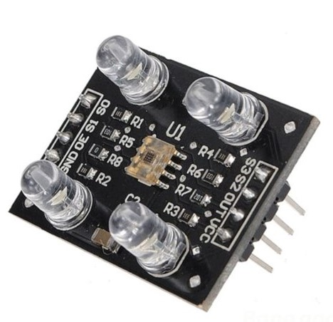

The Robotic Sorting Arm
An arduino based robotic manipulator that can detect and sort colored abjects.

I spent my bachelors looking forward to my final year project. It had to be something spectacular and awe-inspiring. Something dynamic, not another passable project which involved some “new” fibre reinforced composite or the study of fracture mechanics in different steels. So Robotics seemed to be the obvious choice. I had developed a fascination with computer vision and machine learning and this would be the perfect opportunity to implement these technologies and learn more about them.

The team and I started working on the robot. I started taking courses and found projects which I could refer to online. We found an open-source arm that suited our requirements so we decided to use it for our project. The arm had 3 low torque servos for the wrist and gripper actuation. 3 high torque motors for the waist, shoulder and elbow joints. An Arduino MEGA board was used to control the motors. We 3D printed the structure of the robot. I assembled them at home where I was quarantined during the Covid pandemic. Soon stage one was complete and we had a fully functioning arm that could be controlled using the Arduino board.
 Stage 2 of the project involved using a colour sensor to identify different colours. We used the TCS3200 Color Sensor which was ideal for our project. TCS230 senses colour light with the help of an 8 x 8 array of photodiodes. Then, using a Current-to-Frequency Converter, the readings from the photodiodes are converted into a square wave with a frequency directly proportional to the light intensity. This enabled it to detect red, blue and green colours.
Stage 2 of the project involved using a colour sensor to identify different colours. We used the TCS3200 Color Sensor which was ideal for our project. TCS230 senses colour light with the help of an 8 x 8 array of photodiodes. Then, using a Current-to-Frequency Converter, the readings from the photodiodes are converted into a square wave with a frequency directly proportional to the light intensity. This enabled it to detect red, blue and green colours.
The final stage involves using an Nvidia Jetson or Raspberry Pi, which would enable the robot to detect and recognize objects instantly. It includes data collection and labelling, training the model and integrating the whole system. Unfortunately, we could not complete it in time due to delays caused by the pandemic. The robot is currently in the hands of my Project Guide Dr Venkatesh Donekal and I’m currently working with my juniors to finish the project. I have learned so much about robotics, electronics and AI that I would do it all over again.